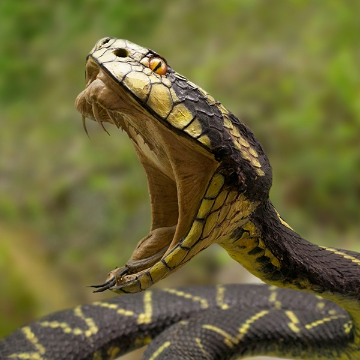
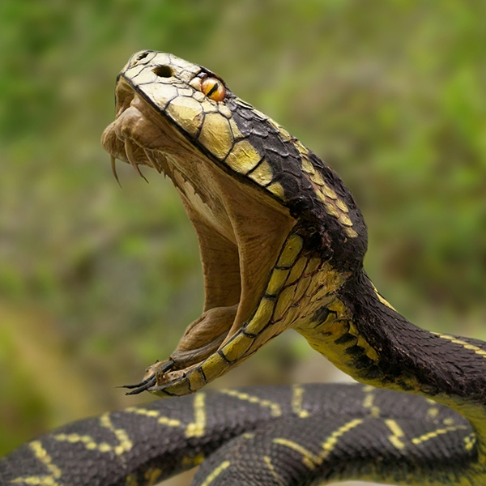

FUN FACT!
Snakes can open their mouths up to 150 degrees, allowing them to eat things that are 75-100% bigger than their own size. It has even been known for a snake to burst after eating prey that is too big for its stomach!
Snakes can open their mouths up to 150 degrees, allowing them to eat things that are 75-100% bigger than their own size. It has even been known for a snake to burst after eating prey that is too big for its stomach!
